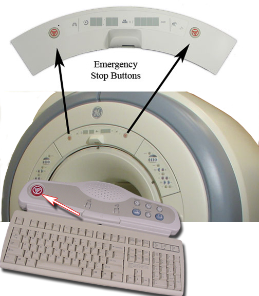
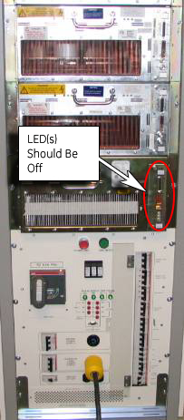

Operating Documentation
Direction 5440001-3, Rev# 6
Signa HDxt Service Methods
Module Version 1.0, Version Date 4/25/07
Operating Documentation |
| Last Update | 06/28/2006 |
This document is for the Signa HD/HDx systems only. The document provides the procedure for checking:
The EMERGENCY STOP function of the Power Distribution Unit (PDU) for the Gradient cabinet, RF cabinet, and magnet enclosure
The EMERGENCY OFF function of the power for the entire Signa EXCITE HD/HDx.
The PDU EMERGENCY STOP buttons are located on the Operator Workspace Keyboard and on the Magnet Enclosure front cover (two buttons, left and right).
An EMERGENCY OFF button is located on the System Main Disconnect Panel. The other EMERGENCY OFF buttons are located by the customer.
Illustration 1: PDU Emergency Stop Button Locations

Shut down the LINUX PC. by right-clicking the desktop, select , clicking on [System Shutdown], and confirming the operation.
Right-click the desktop.
Go to Service Tools, and then select System Shutdown.
Illustration 2: Emergency Stop Locations

Press one of the EMERGENCY STOP buttons as shown in Illustration 2.
Verify the power to the Gradient subsystem and RF subsystem is shut off by checking that the gradient power supply LED’s turn off. (See Illustration 3). Also, verify that the Display LEDs on the Magnet Enclosure and the RF amp are not illuminated.
Illustration 3: Verify Power Supply LED's Are Off

| NOTE: | Activation of the Emergency Stop Button for HFD will remove the high voltage power from the gradient driver, so there will be no gradient power output to the body coil. However, be aware that the low voltage power will stay enabled in the HFD cabinet after the Emergency Stop Button is pressed. This low voltage power remains on so the HFD will be ready for scanning when full power is restored. |
On the PDU, press the EMO Reset Button to return power to all affected cabinets. See Illustration 4 for HFD PDU.
Repeat steps 1 through 3 for each of the other EMERGENCY STOP buttons.
Illustration 4: HFD PDU

| NOTE: | The AC power for the Shield/Cryo-Cooler compressor and the Magnet Monitor are not controlled by the Emergency Off button. |
Press one of the EMERGENCY OFF buttons (the location of buttons is determined by the customer). Verify that power was removed from the PDU by checking the voltage test points.
On the System Main Disconnect Panel, press the PDU POWER ON button. The rest of the system should automatically power on.
On the PDU, press the EMO RESET button.
Repeat steps 1-3 for the other EMERGENCY OFF buttons.